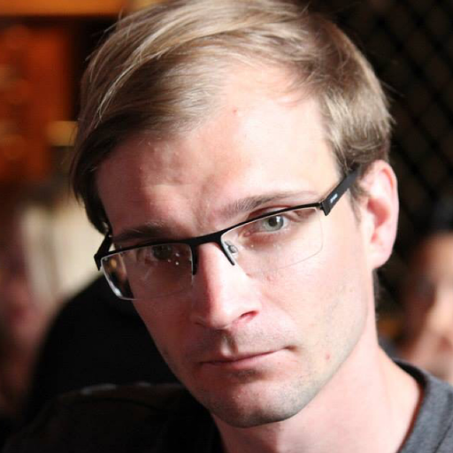

Dr. Lloyd T. Elliott is an Assistant Professor of Big Data in the Department of Statistics and Actuarial Science at Simon Fraser University, and an Honorary Academic Visitor at the Nuffield Department of Clinical Neuroscience at the University of Oxford. Dr. Elliott was trained by the Gatsby Unit at University College London, where he did his PhD thesis on Bayesian nonparametric models for genetic variation under the supervision of Prof. Yee Whye Teh. After his PhD, Dr. Elliott did postdoctoral research on the statistical genetics floor of the Department of Statistics at Oxford, and was a Research Member of the Common Room at Kellogg College. Contact by email at Ⅼ𝔏OYD ᐧ EⅬⅬIOṮṮ ᘒ 🅂FU ᐧ CA or by phone at +1（604）442 4⅞3 or by post at: Department of Statistics and Actuarial Science, Simon Fraser University, 8888 University Dr., Burnaby, B.C., Canada, V5A 1🅂6.
Sonny Min Sonny Min is a second-year Master’s student in Statistics at Simon Fraser University, supervised by Dr. Lloyd Elliott. His research interests include reinforcement learning/deep learning efficiency enhancements and their applications. Sonny graduated with a Bachelor of Economics in Statistics at Sungkyunkwan University in Seoul, South Korea.
Zubia Mansoor is a second year Master’s student in Statistics at Simon Fraser University, supervised by Dr. Lloyd Elliott. Her research interests focus on machine learning and deep learning methods and their applications. She is currently working on uncertainty quantification and out-of-distribution data in the context of deep networks. She graduated with a Bachelor of Science (Honors) in Statistics from St. Xavier’s College, Kolkata, India. She later worked as a research assistant at the Indian Statistical Institute, Kolkata on a water quality project using ML tools and co-authored the publication A hybrid regression model for water quality prediction in OPSEARCH, Springer Nature. Outside school, she enjoys painting and swimming. To learn more about her, click here.
Hannah Sutton graduated from SFU with an honours BSc where she majored in applied mathematics. Her research followed on from a USRA in the summer of 2017 where she was supervised by Dr. Nilima Nigam. The title of her undergrad thesis was ‘An Eigenvalue Problem in Linear Elasticity’. Specifically, she focused on applying numerical methods to solve an eigenvalue PDE problem with boundary conditions. Her overall goal was to prove the existence of a solution to the problem (otherwise known as Jones Modes) for various 2D shapes. She is currently completing an Msc at SFU with her senior supervisor Dr. Caroline Colijn and co-supervisor Dr. Lloyd Elliott. Her research and thesis is focused on ‘Quantification of Uncertainty in Random Forests’. In her spare time she enjoys spending time with her cat, and playing Ultimate.
Winfield Chen is a Master’s student in Statistics at Simon Fraser University. His interests include bioinformatics, statistical genetics, algorithms and data structures, intelligent systems, machine learning, mathematical optimization, and quantitative methods in finance, the social sciences, and public policy. Winfield graduated from SFU with a Bachelor’s in Computing Science and received awards from the Natural Sciences and Engineering Research Council of Canada. In his spare time he can be found enjoying the outdoors, although he has been spotted at the Bloomberg terminal on occasion.
Matthew Parker is a new PhD student at SFU, jointly supervised by Dr. Elliott and Dr. Jiguo Cao. He has a BSc in Physics and Mathematics from the University of Victoria, and a MSc in Statistics, also from the University of Victoria. He is a recent graduate from the Visual and Automated Disease Analytics training program. His research interests include computational statistics, statistics on manifolds, and statistical applications to health care.
Olga Vishnyakova is a PhD student at Simon Fraser University, jointly supervised by Dr. Elliott and Dr. Angela Brooks-Wilson. Her research interest is focused on applying data mining and machine learning techniques to biological data, particularly on developing and utilizing statistical machine learning frameworks to identify patterns in high dimensional data. She has a BSc and MSc in Applied Mathematics from Omsk State University, Russia. She is a recent graduate from Radboud University in the Netherlands with an honours MSc in Computing Science, Big Data Specialization.
Elika Garg is a Bioinformatician jointly supervised by Dr. Elliott and Dr. Lei Sun as part of the CGEn's HostSeq Genetic Epidemiology Sub-Committee. She will be contributing to COVID-19 research efforts involving analysis of human genome sequences. Most recently she was developing precision health products as the Chief Bioinformatician at wellOwise (India). Prior to that she was part of the Ludmer Centre for Neuroinformatics and Mental Health team in Montreal that built polygenic risk-scoring software (PRSoS). She has a MSc in Human Genetics from McGill University, and a BTech in Biotechnology from NIT Warangal (India).
 Dr. Shufei Ge was jointly supervised by Dr. Liangliang Wang and Dr. Lloyd Elliott. She studies Monte Carlo methods, Bayesian nonparametrics, imaging neuroscience and genetics. Shufei did her undergraduate at Central South University and her master at Wuhan University. She is now a tenure-track Assistant Professor at ShanghaiTech University.
Dr. Shufei Ge was jointly supervised by Dr. Liangliang Wang and Dr. Lloyd Elliott. She studies Monte Carlo methods, Bayesian nonparametrics, imaging neuroscience and genetics. Shufei did her undergraduate at Central South University and her master at Wuhan University. She is now a tenure-track Assistant Professor at ShanghaiTech University.